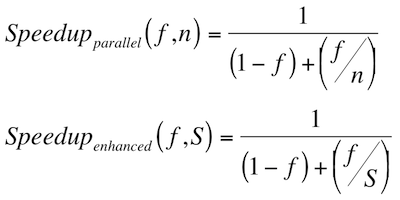

Productivity Tool(s)
sharad singla
(sharad1087@gmail.com)
...Backward Integration

Introducing...
Mike testing, mike testing...
Hello 1, 2, 4...
Hello 1, 2, 4...
https://github.com/OpenGrok/OpenGrok/wiki/OpenGrok-installations
"wicked fast"
source browser!
Setting it up...
Written in Java
- Web server (Tomcat7, GlassFish)
- JDK 7 or 8
- exuberant-ctags
On Ubuntu...
- sudo apt-get install exuberant-ctags tomcat7 openjdk-7-jdk ant git
- mkdir ~/workspace
- cd ~/workspace
- wget https://github.com/OpenGrok/OpenGrok/archive/0.12.tar.gz
On Ubuntu, contd...
- sudo /etc/init.d/tomcat7 start
- On browser, check http://localhost:8080
- tar -xvzf 0.12.tar.gz
- cd ~/workspace/OpenGrok-0.12
- ant
- sudo ./Opengrok deploy
- On browser, check http://localhost:8080/source
Indexing the source code...
- cd ~/workspace/OpenGrok-0.12
- sudo ./Opengrok index
- sudo /etc/init.d/tomcat7 restart
How it does, what it does?
Inverted index
An inverted index is an index data structure storing a mapping from content, such as words or numbers, to its locations in a document or a set of documents.
A forward index, in contrast, maps from documents to content.
Packages
- org.opensolaris.opengrok.analysis (a.k.a. Analyzer Guru)
- org.opensolaris.opengrok.index
- org.opensolaris.opengrok.search
- org.opensolaris.opengrok.history (a.k.a. History Guru)
- org.opensolaris.opengrok.web

they do less (specialized) work.
Creation: Lucene
The popularity of Lucene
http://wiki.apache.org/lucene-java/PoweredBy
Text from PDFs, HTML, Microsoft Word, Mind Maps, and OpenDocument documents, as well as many others (except images), can all be indexed as long as their textual information can be extracted.
Is this helpful?
Is this simple?
Amdahl's Law

What does it mean?
Amdahl's law is used to find the maximum expected improvement to an overall system when only part of the system is improved.
It is often used in parallel computing to predict the theoretical maximum speedup using multiple processors.
80/20 or 90/10 principle
"A program spends 90% of its time in 10% of its code"
...and easier! (human nature)
Introducing...
Allows configuring search engines.
Vim plugin
https://github.com/jdevera/vim-opengrok-search/
- :let b:ogs_app_url = 'http://localhost:8080/source'
- :OgSetProject linux
- :Og full keepalive
References
- https://github.com/OpenGrok/OpenGrok
- http://opengrok.github.io/OpenGrok/
- https://github.com/OpenGrok/OpenGrok/releases/tag/0.12
- https://github.com/OpenGrok/OpenGrok/wiki
- https://blogs.oracle.com/taz/entry/opengrok_0_12
- https://staxz.wordpress.com/2015/03/02/install-opengrok-in-ubuntu-14-04/
- https://lucene.apache.org/core/
- https://cutting.wordpress.com/
- http://simpleselectsearch.blogspot.in/
- https://github.com/jdevera/vim-opengrok-search
The significance of the open flower bracket...
This is a common block start symbol in languages like C and Java.
It has no closing bracket to signify open source.